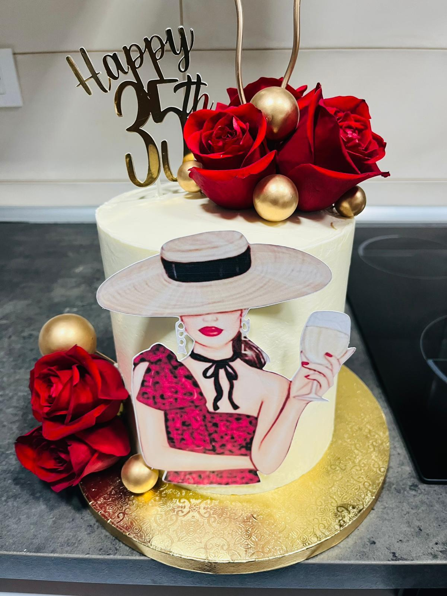
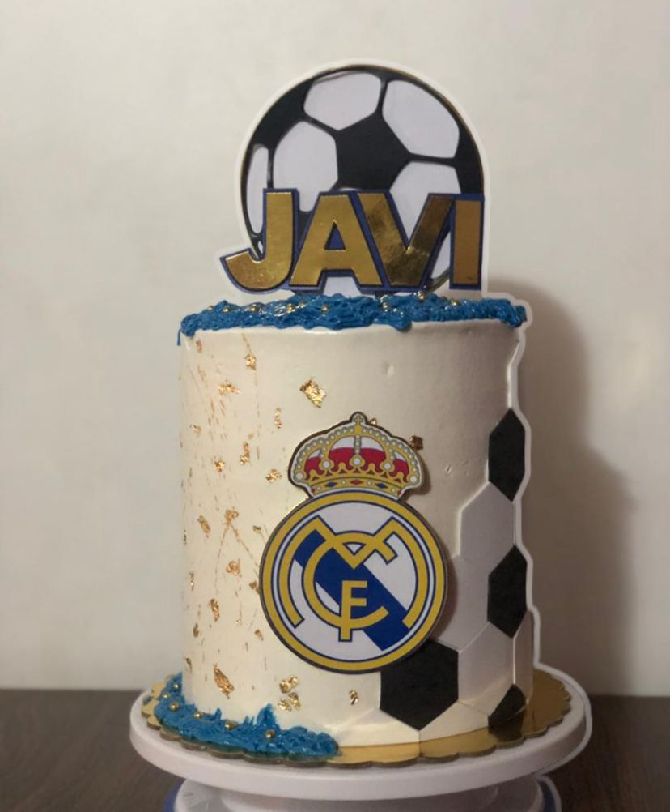
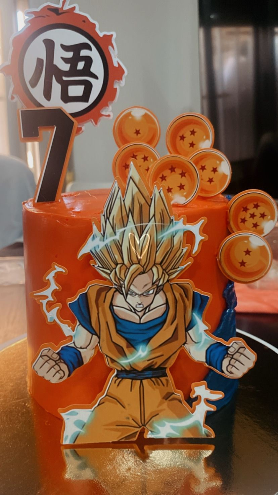
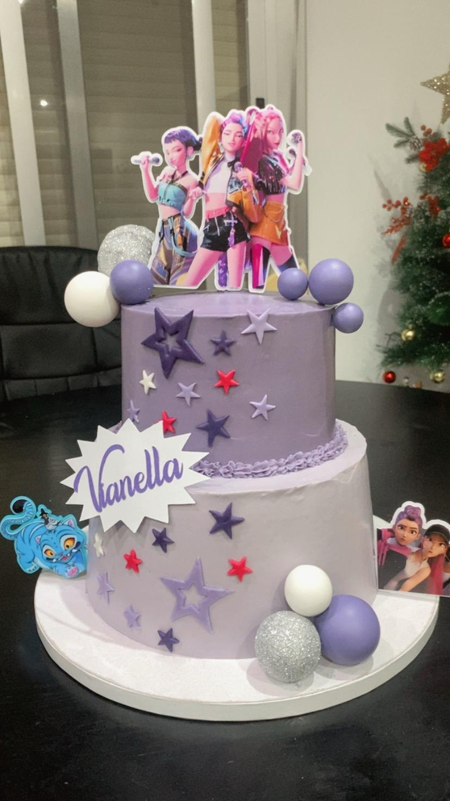
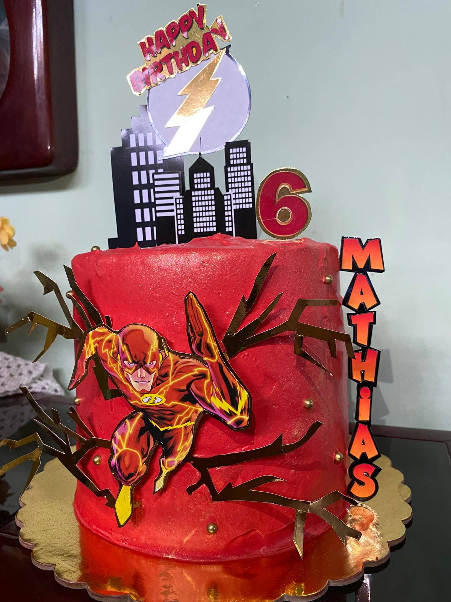

Tartas personalizadas
Diseños temáticos, infantiles, elegantes o de personajes. Ideales para cumpleaños y eventos familiares.
Ver tartas personalizadasTartas personalizadas en Valencia
Repostería artesanal para celebraciones especiales. Diseñamos tu tarta a medida y te guiamos con sabores, raciones y fecha de entrega.
Para tu celebración
Cuéntanos temática, número de raciones, sabores favoritos y fecha. Preparamos una propuesta clara para que reserves sin vueltas.

Diseños temáticos, infantiles, elegantes o de personajes. Ideales para cumpleaños y eventos familiares.
Ver tartas personalizadas
Packs de 6 o 12 unidades con crema, colores y detalles a juego con tu evento.
Ver cupcakes
Mini postres, galletas, cupcakes y decoración coordinada para mesas de celebración.
Ver mesas dulcesEscríbenos ahora con la idea, número de raciones y día del evento.
Trabajos recientes
Haz clic en cualquier imagen para verla ampliada.






Lo que buscan nuestros clientes
Una experiencia pensada para que el pedido sea fácil desde el primer mensaje hasta la entrega.
"Tartas Ricas, sabrosas, la textura es perfecta, las cremas son muy sabrosas, le he hecho varios pedidos y mis preferidas son la Red Velvet y la de Chocolate, recomendada 100%."
Pedido de cumpleaños"Encantada con la delicadeza y el trato personalizado para celebrar un día muy especial para nosotros. Nuestra favorita la de fresas, ¡hemos repetido dos veces!!! mil gracias🤩."
Carmen P. -Valencia"Respuesta rápida por WhatsApp, presupuesto claro y una tarta y mesa de dulces que sorprendió a todos, tarta K-POP."
Valentina. -ValenciaHecho por Zaili
Sugar Victory Cake nace en Valencia desde una historia de esfuerzo, esperanza y amor por los detalles. Cada pedido se prepara de forma artesanal para que el postre también forme parte del recuerdo.
El rosa representa esa fuerza y cercanía: una marca dulce, humana y pensada para acompañar celebraciones importantes.
Ver InstagramSEO local
En Sugar Victory Cake elaboramos tartas personalizadas en Valencia, Catarroja, Albal, Massanassa, Benetússer, Alfafar y localidades cercanas.
Reserva tu pedido
Completa el formulario o escríbenos por WhatsApp. Mientras más detalles nos des, más rápido podremos orientarte.